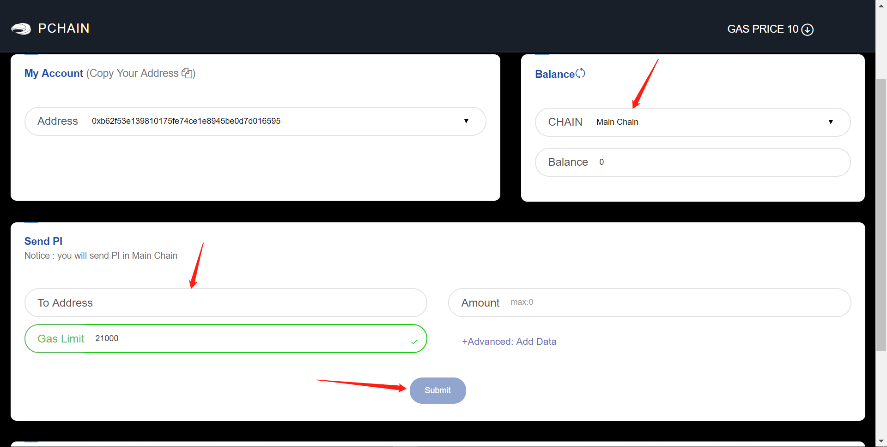

Light Wallet Mode¶
In light mode, you can transfer PI, deploy contract and delegate on our mainnet.
Create or import account¶

If you don’t have an account, click the ‘Wallet–Create’ to create account and set password. The password will only saved on your local computer.
You can also import account if you already have a keystore file (file name usually start with UTC) or private key.
Transfer PI cross chain¶

You can transfer PI from main chain to child chain or transfer from child chain to main chain.
Transfer PI on same chain¶
You can transfer PI to another address by click ‘Send PI–Submit’.
How to delegate¶
If you do not want to run node on PCHAIN yourself, you can delegate PI to one / several Validator candidate(s) with PI wallet (Light wallet).
First, choose one chain that you want to delegate tokens. And make sure the minimum balance with 1,000 PI.

Click ‘Delegate–Recommended Candidates’ and choose one candidate address from this list. Fill the amount with at least 1,000 PI that you want to delegate to this address. Then click ‘Delegate’.

After you delegate successfully, you can check your delegate balance here or go to ‘ Fullbalance’.

How to cancel delegation¶
You can cancel delegate with PIwallet (Light wallet) before starting voting for next Epoch Validator.
Click ‘Delegate–Chain–Cancel Delegate’.
Choose the candidate that your want to cancel delegation to from the list. The default amount shows the total amount that you delegate to this address.
You can cancel with total delegation amount. Also, you can define the amount that you want to decrease but ensure the delegate balance to this address is equal or greater than 1,000 PI.